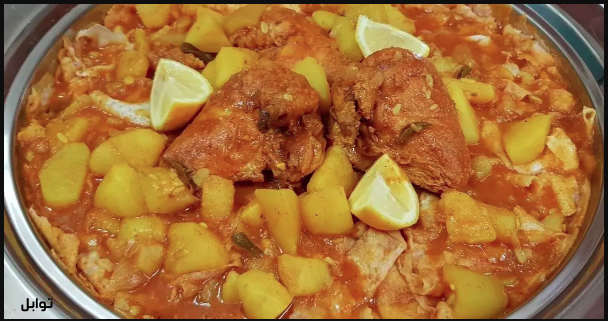

Tharied

Tharied is a traditional Arab dish made from pieces of bread in a vegetable or meat broth. It is especially consumed in the holy month of Ramadan and is quite popular in Arabia.
Ingredients
- 1 kg of lamb meat
- 1/2 kg of potatoes
- 1/2 kg of sliced carrots
- 1/2 kg of sliced field pumpkin
- 1/2 kg of tomatoes
- 1/8 kg of fine cut onions
- fine cut corinader
- A fine cut head of garlic
- 1 tablespoon of soup spices
- Salt as desired
- 3 pieces of Arab bread or pita bread cut into medium to small slices
- Adequate oil
Steps
- Prepare the meat by separating the bones and setting them aside, then cutting the meat into small cubes
- Heat enough oil in a saucepan
- fry the meat in the saucepan for 15 mins until it aquires a baked brownish-red color
- fry the onions in a different saucepan until it gets a brownish-golden color
- Add the garlic to the onions mix properly
- Add the spices to the mixture
- Mix properly for two mins then add the meat along with the vegetables and continue stirring the mixture into a uniform mixture
- Pour 1 liter of warm water then add the bones
- Let the mixture boil then leave for 30 mins
- Place the bread in the serving bowl then pour the mixture into the bowl
- Position the meat on the top
- Tharied is best served hot